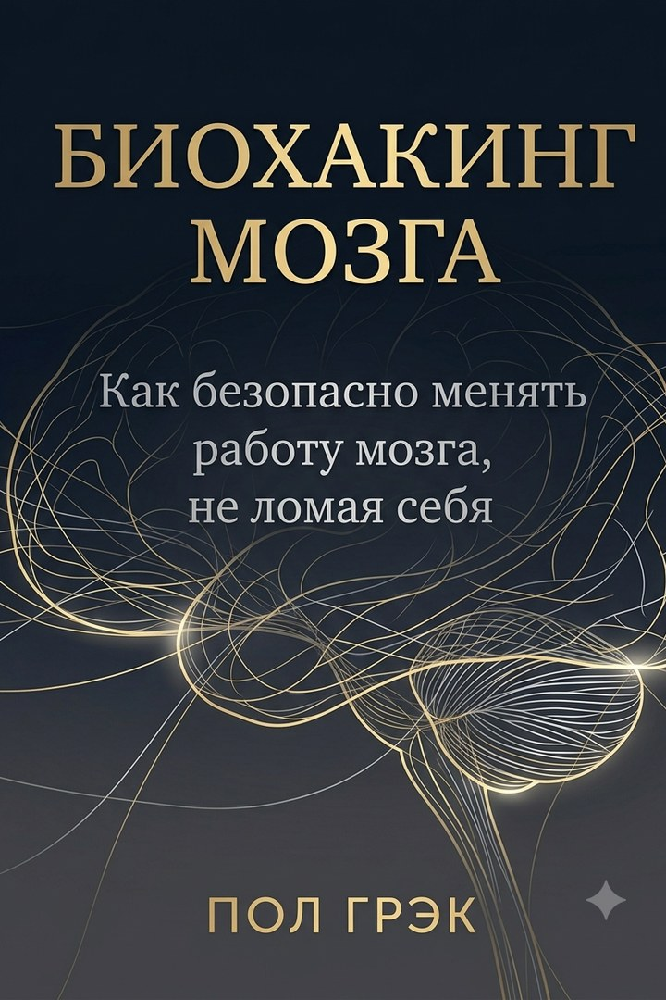
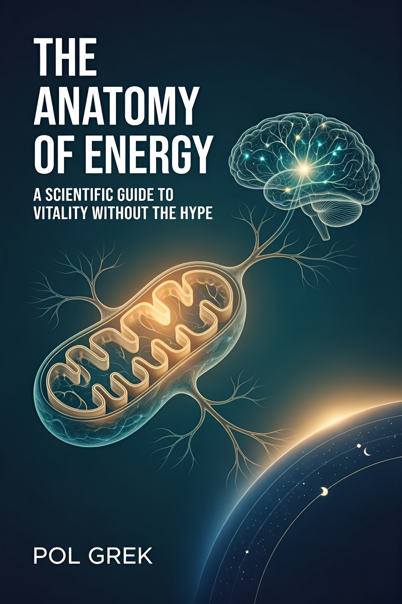

С чего начать
Биохакинг мозга
Честный гайд: база и минимальная эффективная доза, без «волшебных» таблеток.

Восстановление
Три системы, которые решают, хватит ли вам сил
Оплата на Литрес или Amazon. Здесь — описание и фрагмент; сайт не принимает платежи.
A — надёжные данные; B — хорошие исследования; C — ограниченные данные; D — наблюдения.
Восстановление
Все книги серии →Научно грамотный каркас хронической усталости. Три измеримые системы: митохондриальная, когнитивная и циркадная. Протоколы с уровнями доказательности, N-of-1 эксперименты, честный разбор того, что не стоит покупать.
«Ваш провал в 15:00 — не черта характера. Это физиология трёх систем энергии.»
— Пол Грэк
Фрагмент из рукописи. Если стиль зайдёт — полный текст на Литрес.
АНАТОМИЯ ЭНЕРГИИ Научный путеводитель по витальности без тумана и магии Дисклеймер Эта книга — не замена врачу. Информация, содержащаяся в ней, носит образовательный характер и основана на научных данных, доступных на момент написания. Она не предназначена для диагностики, лечения или профилактики каких-либо заболеваний. Перед тем как вносить изменения в свой рацион, режим сна или физическую активность, проконсультируйся с врачом. Это особенно важно, если у тебя есть хронические заболевания, ты принимаешь лекарства или состоишь на учете у специалиста. Автор не несет ответственности за решения, принятые на основе прочитанного. Каждый организм уникален. То, что работает для одного человека, может не подойти другому. Настоящая сила — не в слепом копировании протоколов, а в понимании принципов, на которых они основаны. Если ты обнаружил у себя «красные флаги» (см. Приложение Г) — остановись и обратись к врачу. Книга подождет. Об авторе Пол Грэк — исследователь в области прикладной нейропсихологии и корпоративной продуктивности. Образование — в сфере когнитивных наук; много лет работает на стыке нейробиологии, технологий и управления командами. Работал консультантом по устойчивости к стрессу и концентрации внимания в международных IT-компаниях и финансовых организациях. Специализируется на внедрении научно обоснованных методов повышения когнитивной эффективности. Автор бестселлеров «Ментальный дебаг» и «Осторожный биохакер». В своей новой книге «Анатомия энергии» он предлагает читателям не очередной набор «лайфхаков», а стройную научную систему понимания и управления собственной энергией — от молекулярного уровня до повседневных привычек. Предисловие: Почему я написал эту книгу Я люблю данные. Я тот самый человек, который может провести час, выбирая идеальную кофеварку, потому что «кривая температур заваривания имеет решающее значение». Мой мозг устроен так, чтобы искать способы делать всё лучше, быстрее, эффективнее. Поэтому, когда несколько лет назад я впервые столкнулся с ощущением хронической усталости, я подошел к этому как инженер. Я мерил кетоны, отслеживал HRV, сдавал анализы, читал исследования. Я нырнул в мир биохакинга с головой. И знаете, чт…